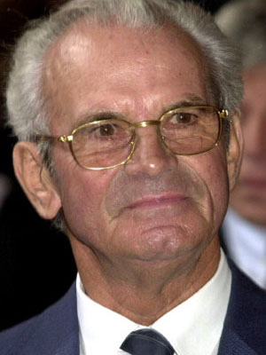

Otto Beisheim (3 January 1924 – 18 February 2013) was a German businessman and founder of Metro AG. In 2010, his net worth was estimated at US $3.6 billion.
During World War II Beisheim served in the SS Division Leibstandarte. Beisheim was a SS-Sturmmann (corresponds private) in an artillery regiment of the Leibstandarte.
After the war, Beisheim went into business. The first Metro Market, opened in November 1963 in Essen-Altenessen. On 10 January 2004, Beisheim Center was officially opened on the northwest side of Potsdamer Platz in Berlin, built for 463 million euros, and including the Ritz-Carlton and Marriott chains.
In 2009, he sold 5.2% of the shares of Metro AG to various national and international investors; a further 3.1% could be sold.The WHU-Otto Beisheim School of Management, in Koblenz is named after him.